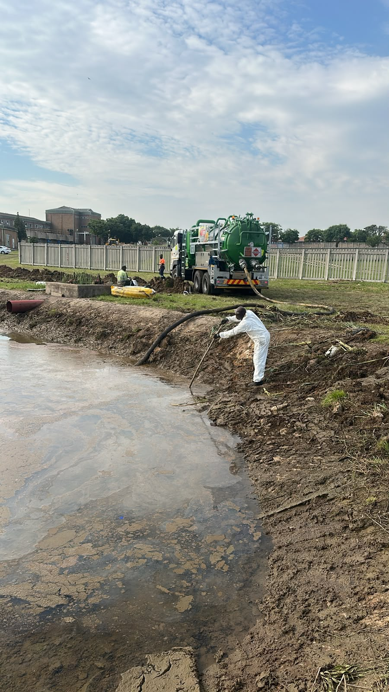

Insight
Pollution Control Dams: What They Do and Why They Matter
Pollution Control Dams: What They Do and Why They Matter

Rain that falls on a mining site does not stay clean for long. Once it runs over stockpiles, haul roads, workshops or processing areas it can pick up sediment, salts, hydrocarbons and metals. A pollution control dam (PCD) is the structure that captures this "dirty" water so it does not reach rivers, wetlands or groundwater.
Clean water and dirty water
Good mine water management starts by keeping the two apart. Clean runoff from undisturbed land is diverted around the operation and released to the environment. Dirty water from disturbed areas is channelled to the PCD, where it can be stored, settled, re-used in the process, evaporated or treated. In South Africa, this separation is a regulatory expectation for mines, and the design of these systems is closely tied to a site's water use authorisations.
What goes into building one
A PCD is more than a hole in the ground. A well-built dam typically involves:
- Sizing for the catchment it serves and the storm events it must contain without spilling.
- Earthworks — excavation and compacted embankments built to engineering specifications.
- Lining, often with geomembranes over a prepared subgrade, to stop seepage into groundwater.
- Silt traps upstream to catch sediment before it fills the dam.
- Inlets, spillways and pumping so water can be moved, re-used and managed in wet seasons.
- Monitoring points so water quality and levels can be checked over time.
Why quality of construction matters
Most PCD problems come back to the basics: poor compaction, damaged liners, or a dam that was too small for the catchment. Those failures can lead to spills, groundwater contamination and regulatory action — and they are far more expensive to fix after the fact than to get right during construction.
How SMR can help
Pollution control dam construction is one of SMR's core services, and it sits naturally alongside our earthworks, geotechnical and rehabilitation capabilities. If you are planning a new PCD or need to upgrade an existing one, get in touch to discuss the scope.